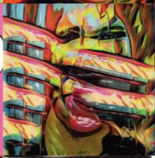
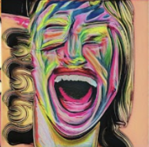
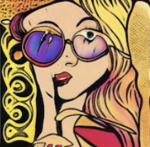
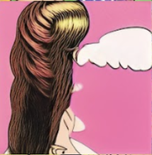

Collect
Images were downloaded from Pinterest boards as a starting visual pool for Pop Art-style training data.

StyleGAN2-ADA / Pop Art / Portrait Dataset
A StyleGAN2-ADA experiment exploring how a custom Pop Art portrait dataset can generate stylized AI poster visuals.
POP_AI began as an exploration of using machine learning to generate visual material for stylized poster design. The project fine-tunes a pre-trained face generation model with a custom Pop Art portrait dataset, testing how dataset choice reshapes the aesthetic behavior of the model.
The long-term direction is a personalized visual system: user preferences, tags, or identity-related inputs could eventually become image generation parameters for custom poster visuals.

The training material was collected, resized, filtered, and reorganized around portrait-based Pop Art imagery. This made the dataset better aligned with the face-based FFHQ model.
Images were downloaded from Pinterest boards as a starting visual pool for Pop Art-style training data.
Images were cropped and resized into a consistent 512x512 format for model training.

Portrait images were manually curated and supported by classifier experiments to improve dataset focus.


The project first considered StyleGAN3, then shifted toward StyleGAN2-ADA because it supports fine-tuning from existing pre-trained models. This made the workflow more realistic for a limited dataset and cloud-based training environment.
Different model directions were tested, including WikiArt and FFHQ. The final direction used ffhq.pkl with the Pop Art portrait dataset to preserve face structure while learning a stronger graphic style.

Large dataset and hardware limits made full training difficult.
Fine-tuning offered a stronger route for small custom data.
WikiArt and FFHQ were compared as different starting points.
The final training direction aligned FFHQ with Pop Art faces.


The final outputs show a clear movement toward Pop Art portraiture: saturated color, graphic facial structure, painterly texture, and strong poster-like crops.

At this stage, the model has started to show a clear Pop Art styling tendency through stronger color, graphic portrait shapes, and poster-like visual texture. However, it has not yet formed a stable style output ability.
Some generated images still contain visible problems, including torn facial details, repeated features, unstable eye and mouth structures, and incomplete integration between the pre-trained face model and the Pop Art dataset.





Current Project Status
The current model is still in an early training stage. It has not reached the full training scale suggested for StyleGAN2-ADA, so the output should be understood as an experimental test rather than a completed generation system.
The model has started to learn Pop Art color, portrait composition, and graphic texture. However, the style is still unstable and has not yet become a consistent visual language.
The main issues are limited training time, a relatively small dataset, repeated facial features, fragmented details, and incomplete fusion between the FFHQ face model and the custom Pop Art dataset.
Even at this stage, the workflow shows potential for AI-assisted poster design. With more training and a stronger input pipeline, it could support personalized visual outputs based on user preferences, tags, or identity-related data.
06 / Future Development
The next stage is to connect personal input data with visual parameters. Survey answers, preference tags, browsing patterns, or selected moods could become a bridge between individual identity and generated poster aesthetics.